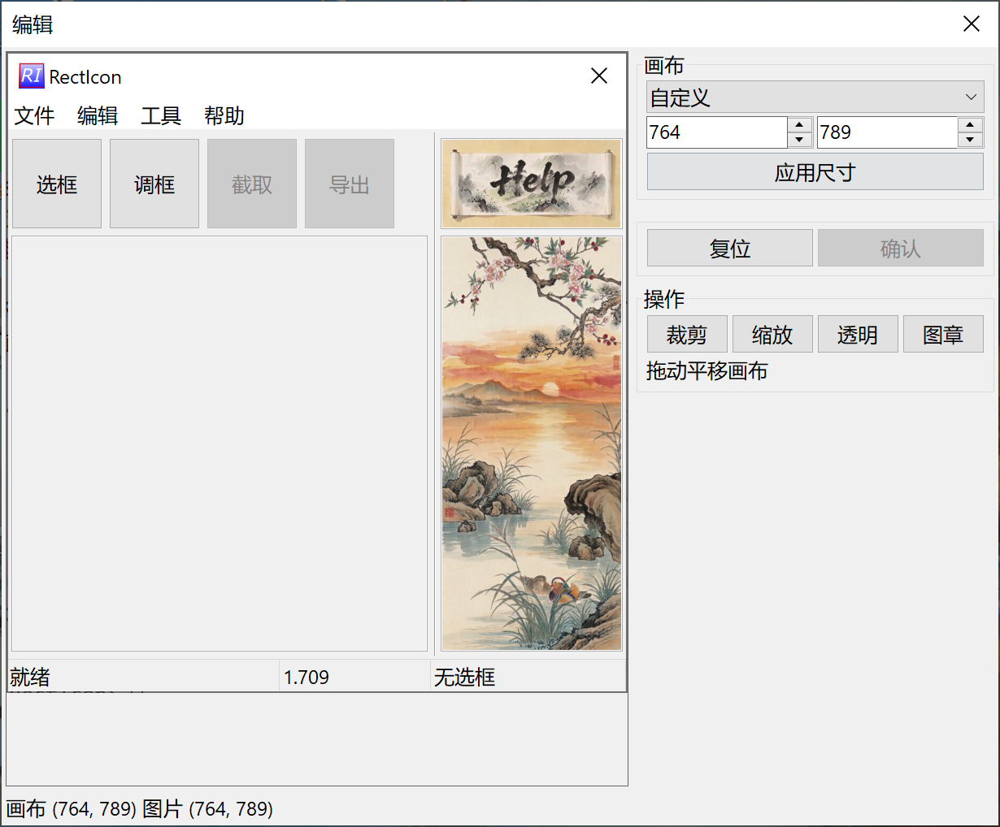
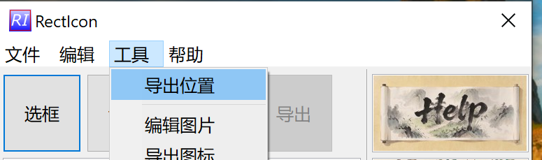
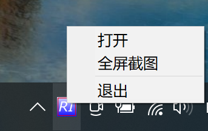

操作
截图流程
正常流程，默认开启全局快捷键
截图流程
├─ 1. 选框：Alt + A
├─ 2. 调框：双击或 Esc 键取消（可保持一种尺寸连续截图）
├─ 3. 截取：Alt + S
└─ 4. 导出菜单
菜单
├─ 文件
│ └─ 退出程序
│
├─ 编辑
│ ├─ 撤销
│ │ └─ 针对内置编辑器使用。双击图片区域打开内置编辑器，操作并确认后
│ │ 会覆盖当前图片；返回主界面后“撤销”可还原到编辑前的图片。
│ │
│ └─ 设置
│ ├─ 选择使用剪切板
│ ├─ 创建桌面快捷方式
│ └─ 修复选项：当软件出现问题时可以尝试此选项（正常情况下请勿选择）
│
└─ 工具
├─ 导出位置：查看导出后的图片（常用）
├─ 编辑图片（MS Paint）
│ └─ 用外置图形编辑器编辑后，请务必保存图形 (Ctrl + S) 并关闭编辑器。
│ 注意：若使用 MS Paint，请保证不更换保存路径，否则 RectIcon 不会更新图片。
├─ 导出图标：可批量导出
└─ 缩放图片：可批量缩放内置编辑
> 双击图片区域打开
内置编辑
├─ 查看：无缩放模式，可准确查看图片
├─ 缩放：缩放图片
├─ 透明：RectIcon 采用偏色方式使背景透明，取色并调整偏离
└─ 图章：方便去水印
主图

内置编辑器

导出图标

导出位置

全屏截图